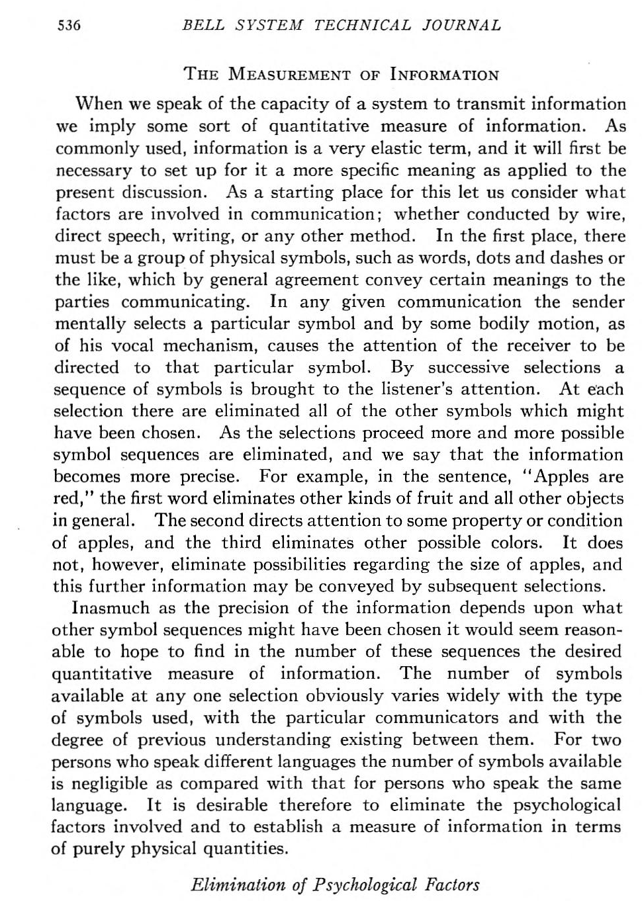
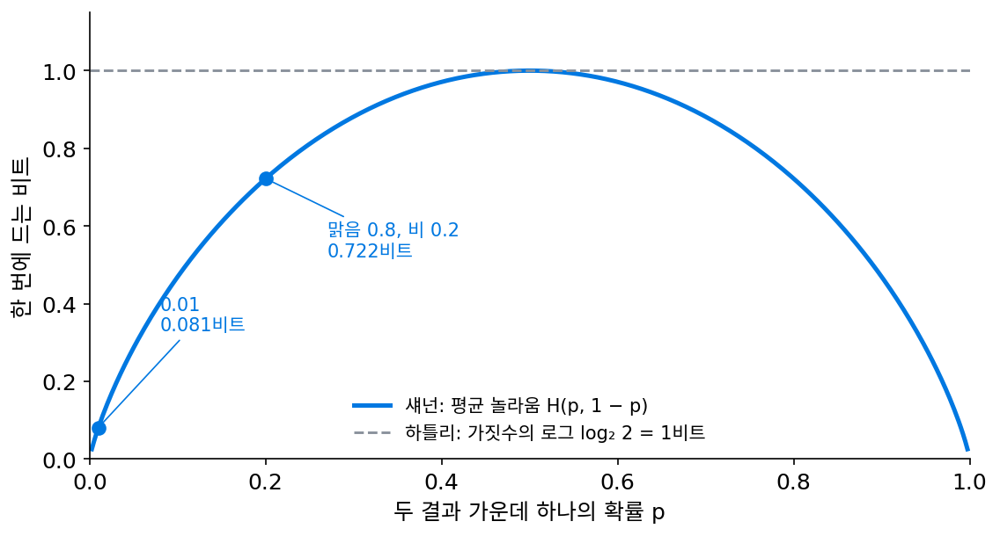
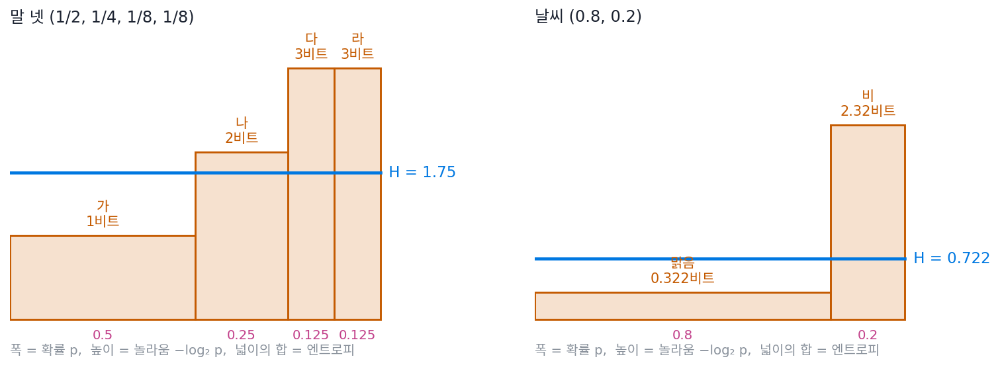
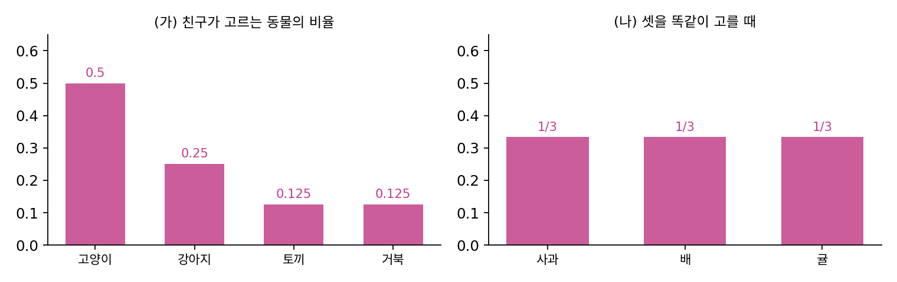
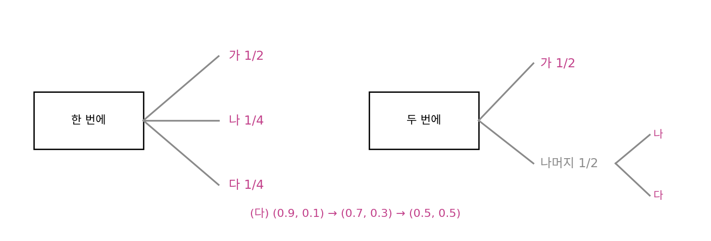
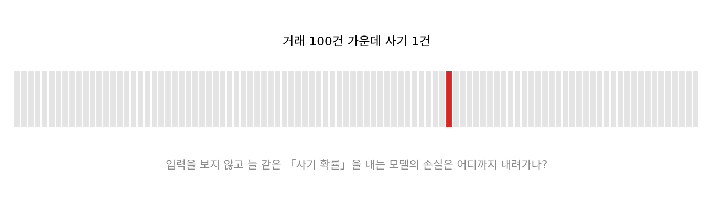

엔트로피: 평균 놀라움, 평균 코드 길이의 하한
결과 하나하나에는 놀라움이 있다. 그런데 날씨를 날마다 0과 1로 보내야 하는 사람에게 필요한 것은 어느 하루의 비트가 아니라 하루 평균 몇 비트가 드느냐다. 맑은 날이 열흘에 여드레인 도시라면 맑은 날의 놀라움은 −log₂ 0.8 = 0.322비트이고 비 오는 날은 2.322비트다. 「맑음」과 「비」를 0과 1로 보내면 하루 1비트가 드는데, 두 놀라움을 날씨가 나오는 비율로 평균하면 1비트보다 작은 값이 나온다. 그 평균은 무엇을 뜻하고, 정말 그만큼까지 줄여 보낼 수 있을까?
역사: 뜻을 빼고 가짓수만 세기
섀넌보다 20년 앞서, 미국 벨 연구소의 하틀리(Ralph V. L. Hartley)는 1927년 9월 이탈리아 코모 호숫가의 국제 전신전화 학회에서 「정보의 전송(Transmission of Information)」을 발표했고, 이 글은 1928년 『벨 시스템 기술 저널』에 실렸다. 그는 전신, 전화, 사진 전송, 텔레비전이 정보를 얼마나 보낼 수 있는지를 한 척도로 비교하고 싶었다. 걸림돌은 「정보」라는 말이 사람마다 다른 것을 뜻한다는 데 있었다. 그의 예로, 말이 다른 두 사람이 한 번에 선택해 쓸 수 있는 기호는 같은 말을 쓰는 두 사람에 비하면 거의 없다.

하틀리는 주고받는 사람에 따라 달라지는 이런 사정을 「심리적 요인」이라 부르고 일부러 계산에서 뺐다. 받는 쪽이 할 수 있는 일은 보낸 쪽이 선택한 기호가 다른 기호가 아니라 그 기호라는 것을 판별하는 것뿐이라고 보고, 기호의 뜻은 묻지 않았다. 한 번에 선택할 수 있는 기호가 s가지이고 n번 선택하면 가능한 기호의 줄은 sⁿ가지이므로, 그는 정보의 양을 「가능한 기호 줄의 가짓수의 로그」로 정해 H = n log s라 적었다. 다섯 번 선택하는 보도(Baudot) 전신 코드의 한 글자는 5 log 2, 100글자는 500 log 2다.
하틀리의 셈은 모든 줄이 똑같이 나올 수 있다고 본 셈이라, 영어에서 e가 z보다 훨씬 자주 나온다는 사실이 들어갈 자리가 없었다. 1948년 섀넌(Claude Shannon)은 「통신의 수학적 이론」에서 「로그가 가장 자연스러운 척도라는 것은 하틀리가 짚었다」고 그를 인용한 뒤, 결과마다 확률이 다를 때의 척도로 H = −Σ p log p를 내놓고 엔트로피라 불렀다. 그는 −Σ p log p가 몇 가지 바라는 성질을 만족하는 유일한 형태라는 정리(정리 2)를 부록에서 증명해 놓고도, 본문에는 이 정리가 이론에 꼭 필요하지는 않고 정의에 그럴듯함을 보태려고 실었을 뿐이라고 적었다. 정의가 옳다는 진짜 근거는 그 정의에서 나오는 결과들에 있다는 것이었다. 그 결과 가운데 하나가, 엔트로피가 평균 코드 길이가 내려갈 수 있는 바닥이라는 사실이다.


가짓수에 로그를 씌우는 건 지금 보면 당연한데요. 보도 코드 한 글자가 다섯 칸이니까 5비트, 끝이잖아요.

그 「비트」라는 낱말이 1928년에는 없었어요. 섀넌의 1948년 논문이 튜키가 지은 말이라며 처음 소개하죠. 그래서 하틀리는 로그의 밑을 정하지 않고 5 log 2라고 적었어요. 그때 더 어려웠던 건 무엇을 계산에서 빼느냐였고요.

뜻을 빼는 거요? 음, 같은 말을 쓰는 사람끼리 기호를 더 많이 선택해 쓸 수 있다면, 전신 기사한테는 뜻이 오히려 중요해 보였을 것 같은데요.

그래서 하틀리는 그 사정에 「심리적 요인」이라는 이름까지 붙여 일부러 뺐어요. 전신, 전화, 사진 전송, 텔레비전을 한 척도로 비교하려면 사람마다 다른 뜻을 계산에 넣을 방법이 없었으니까요.

그런데 모든 줄이 똑같이 나온다고 치면, 맑은 날이 여드레인 도시도 하루 1비트로 세는 거네요. 그림의 점선처럼요.

섀넌은 확률을 넣은 식을 유일하다고 증명까지 해 놓고, 그게 진짜 근거는 아니라고 했다는 게 이상해요. 증명보다 센 근거가 뭐가 있어요?
통신 회사가 알고 싶은 건 식이 아름다운지가 아니라, 이 숫자보다 짧게는 못 보낸다는 보증이었어요. 그 보증이 서면 식이 왜 그 형태이냐는 물음은 덜 중요해지죠. 그럼 맑음 0.8, 비 0.2의 0.722비트가 정말 「그보다 짧게는 못 보낸다」는 숫자인지, 작은 예로 확인해 볼까요?
스무고개의 평균 질문 수
친구가 동물 넷 가운데 하나를 마음에 품는데, 고양이를 절반, 강아지를 4분의 1, 토끼와 거북을 8분의 1씩 선택한다고 하자. 「고양이야?」부터 묻고, 아니면 「강아지야?」, 그래도 아니면 「토끼야?」를 묻는다. 고양이면 1번, 강아지면 2번, 토끼와 거북이면 3번에 끝나므로 평균은 ½·1 + ¼·2 + ⅛·3 + ⅛·3 = 1.75번이다. 넷을 균등하게 둘씩 나누는 질문이면 늘 2번이니, 자주 나오는 답부터 물어 0.25번을 아꼈다.
질문 수 1, 2, 3, 3은 각 동물의 놀라움 −log₂ p와 같고, 1.75는 그 놀라움을 동물이 나오는 확률로 평균 낸 값이다. 확률을 폭으로, 놀라움을 높이로 막대를 그리면 막대 넓이의 합이 이 평균이다. 이렇게 확률로 평균 낸 놀라움을 엔트로피 (평균 놀라움, entropy)라 한다.

식의 부등식이 섀넌이 말한 「결과」다. 결과를 0과 1의 줄로 적되 끊어 읽을 표시 없이 이어 보내는 코드라면, 어떻게 짜도 평균 길이 ℓ̄이 엔트로피 H보다 짧을 수 없다. 거꾸로 결과 하나마다 길이를 −log₂ p를 올림한 정수로 주면 평균이 H + 1비트 안쪽인 코드를 늘 만들 수 있고, 여러 날을 묶어 보내면 하루에 버리는 비트가 묶은 날 수에 반비례해 줄어 H에 다가간다. 동물 넷처럼 확률이 모두 2의 거듭제곱이면 질문 수가 엔트로피와 같지만, 셋을 균등하게 선택하는 경우의 엔트로피는 log₂ 3 = 1.585비트인데 가장 잘 짠 질문도 1, 2, 2번으로 평균 1.667번이 든다(sources/entropy/s2_entropy.py). 정수로 올리는 손해는 문제 1의 자물쇠처럼 많이 모아 물을 때 묻힌다.
엔트로피에는 바닥과 천장이 있다. 결과 하나가 확실하면(확률 1) 물을 것이 없어 H = 0이고, 결과가 m가지일 때 모두 같은 확률이면 어느 것부터 물어도 아낄 곳이 없어 가장 큰 log₂ m이다. (0.97, 0.01, 0.01, 0.01)처럼 거의 확실한 분포는 0.242비트, 넷이 균등하면 2비트다. 하틀리의 「가짓수의 로그」는 모든 결과가 균등할 때의 엔트로피, 곧 천장이다.
동역학에서 기체의 엔트로피를 거시 상태 하나에 속한 미시 상태의 수 W의 로그로 세운 것도 같은 천장의 이야기다. W가지가 균등하면 몇 번째 경우인지 적는 데 log₂ W비트가 들고, 평균 놀라움으로 세도 log₂ W가 나온다.
이니그마: 엔트로피 천장에 붙은 암호문
글자 엔트로피의 천장 log₂ 26에 일부러 다가가려 한 기계가 있다. 독일 기술자 셰르비우스(Arthur Scherbius)는 1918년 2월 로터를 쓰는 암호기계의 특허를 냈고, 이니그마라는 이름의 이 기계는 1920년대 초부터 팔렸다. 독일 해군이 1926년에, 육군이 1928년에 고친 형태를 들였고, 1930년 6월 무렵에는 플러그보드를 단 이니그마 I이 나왔다. 자판을 누르면 전류가 플러그보드와 로터 셋을 지나 반사판에서 꺾여 돌아오고, 램프 판에서 다른 글자 하나를 켠다. 누를 때마다 오른쪽 로터가 한 칸씩 돌기 때문에, 같은 글자를 거듭 눌러도 켜지는 글자가 매번 다르다. 받는 사람은 같은 설정에 맞춘 기계에 암호문을 치고, 그러면 램프에 원문이 켜진다.
로터가 도는 덕에 암호문의 글자 빈도는 평평해진다. 아래 위젯에 링컨의 게티즈버그 연설 1,149글자를 넣으면, 원문은 E가 14.4%, T가 11.0%로 편중돼 한 글자에 4.038비트인데, 암호문은 가장 흔한 글자도 5.0%라서 4.683비트로 천장 log₂ 26 = 4.700비트에 거의 붙는다(sources/entropy/s6_enigma.py). 흔한 글자부터 원문 글자를 비교해 보던 옛 암호 풀이는 여기서 막힌다. 그렇다고 암호문에서 원문의 정보가 사라진 것은 아니다. 놀라움이 듣는 사람이 부여한 확률에 달렸듯이, 키를 아는 사람에게 암호문은 원문과 같은 글이고, 키를 모르는 사람에게만 균등한 글자 더미로 보인다. 그 키를 균등하게 선택한다면 키의 엔트로피는 경우의 수의 로그다. 로터 다섯 가운데 셋을 선택하는 순서 60가지, 시작 위치 17,576가지, 플러그 10쌍을 꽂는 법 150,738,274,937,250가지를 곱하면 67.11비트다.
암호문의 엔트로피가 천장에 붙었어도 빈틈은 있었다. 전류가 반사판에서 다른 줄로 돌아오는 구조라서, 글자가 자기 자신으로는 절대 바뀌지 않았다. 폴란드 암호국의 레예프스키(Marian Rejewski)가 1932년 12월 처음 이니그마를 풀었고, 1939년 7월 말 바르샤바 근처의 회의에서 그 방법을 영국과 프랑스에 넘겼다. 영국 블레츨리 파크는 날씨 보고처럼 형태가 뻔한 전문에서 추측한 원문 조각(크립)을 암호문 위로 밀어 보며, 같은 글자가 겹치는 자리를 지워 나갔다. 남은 자리마다 로터 설정을 기계로 시험하려고 튜링(Alan Turing)이 고안한 봄베의 첫 대가 1940년 3월 18일 블레츨리 파크에 들어왔다. 아래 이니그마 모조품은 처음이면 튜토리얼부터 열린다. 민준과 서연을 따라 여덟 단계를 한 번씩 해 보고, 챌린지에서 크립 지우기와 서연의 쪽지까지 풀어 보자.
ML에서: 입력을 보지 않는 모델의 손실
분류 자료의 라벨 비율만 알고 입력은 보지 않는 모델을 생각해 보자. 이 모델이 할 수 있는 가장 좋은 일은 늘 라벨 비율 그대로의 확률을 내는 것이고, 그때 평균 손실은 라벨 분포의 엔트로피가 된다. 고양이와 개 사진이 반반인 자료라면 ln 2 = 0.693 nat이고, 열 클래스가 균등하면 앞부분의 ln 10 = 2.303 nat이다. 학습한 모델의 손실은 이 값과 비교해 읽어야 한다. 손실이 0.06 nat이라는 숫자는 클래스가 균등한 자료에서는 대단한 성적이지만, 라벨이 한쪽으로 크게 편중된 자료에서는 입력을 하나도 보지 않고 낼 수 있는 값일 수 있다(문제 6).
문제 4. 동물 스무고개
(가) 친구가 고양이 1/2, 강아지 1/4, 토끼 1/8, 거북 1/8의 비율로 동물을 선택한다. 평균 질문 수가 가장 적은 질문 순서와 그 평균, 엔트로피를 구하라. (나) 친구가 사과, 배, 귤을 똑같이 선택할 때, 가장 잘 짠 질문의 평균 질문 수와 엔트로피를 구하고 둘이 왜 다른지 말하라. (다) (나)를 여러 번 모아 물으면 한 번에 드는 질문 수는 어떻게 되는가?

(가)는 흔한 것부터 물으면 1, 2, 3, 3번이라 평균 1.75번이에요. 엔트로피도 ½·1 + ¼·2 + ⅛·3 + ⅛·3 = 1.75비트로 같아요.
(나)는 「사과야?」 물어서 맞으면 1번, 아니면 「배야?」 해서 2번. 1, 2, 2번이라 평균 5/3 = 1.667번이야. 엔트로피는 log₂ 3 = 1.585비트고.
(가)에서는 같았는데 (나)에서는 왜 0.082만큼 어긋날까요?
음, 동물마다 놀라움을 질문 수와 나란히 놓아 볼게요. (가)는 확률이 1/2, 1/4, 1/8이라 놀라움이 1, 2, 3으로 마침 정수였어요. (나)는 놀라움이 1.585인데 질문은 1번 아니면 2번이라서, 사과는 0.585번 덜 묻고 배와 귤은 0.415번씩 더 물어요. 평균 내면 조금 손해예요.
그럼 (다)요. 과일을 여러 번 선택한 것을 모아서 한꺼번에 물으면요?

돌려 볼게요. 두 번 모으면 9가지라 4번, 한 번에 2번. 다섯 번 모으면 243가지라 8번이니까 1.6번, 백 번 모으면 159번이라 1.59번이에요. 1.585에 다가가요.

자물쇠 첫 자리 때랑 같네. 엔트로피는 한 번 물을 때의 질문 수가 아니라, 많이 모아 물을 때 한 번에 드는 질문 수가 내려갈 수 있는 바닥이야.

그래요. 그리고 어떤 순서로 물어도 그 바닥 밑으로는 못 내려가요. 바닥까지 얼마나 붙을 수 있느냐는 질문을 묶는 법에 달렸고요.
문제 5. 두 번에 나눠 선택하기
(가) 가 1/2, 나 1/4, 다 1/4인 분포의 엔트로피를 구하라. (나) 같은 선택을 「가인가, 아닌가」를 먼저 정하고, 아니면 「나와 다 가운데 어느 것인가」를 반반으로 정하는 두 번의 선택으로 보면, 두 선택의 엔트로피로 (가)의 값을 어떻게 만들 수 있는가? (다) 결과가 둘인 분포 (0.9, 0.1)을 (0.7, 0.3), (0.5, 0.5)로 균등하게 만들어 가면 엔트로피는 어떻게 되는가? 결과가 넷이면 엔트로피는 어디서 어디까지인가?

(가)는 ½·1 + ¼·2 + ¼·2 = 1.5비트예요.
(나)는 두 선택의 엔트로피가 각각 얼마인가요?
첫 선택은 가냐 아니냐가 반반이라 1비트, 둘째도 반반이라 1비트예요. 그대로 더하면 2비트라 1.5가 아닌데요.
둘째 선택은 늘 하나요?

아, 가가 아닐 때만 해요. 절반의 경우에만 하니까 1비트에 ½을 곱해야 해요. 1 + ½ × 1 = 1.5비트, (가)와 같아요.
섀넌이 1948년 논문에서 엔트로피가 꼭 지켜야 할 성질로 든 게 이거래. 1/2, 1/3, 1/6을 반반으로 먼저 나누고, 둘째에서 2/3, 1/3로 나누는 그림이 논문에 있어. 계산해 보니 H(1/2, 1/3, 1/6) = 1.4591이고 1 + ½ H(2/3, 1/3)도 1.4591이야.
(다)는요?
H(0.9, 0.1) = 0.469, H(0.7, 0.3) = 0.881, H(0.5, 0.5) = 1이에요. 균등하게 만들수록 커져요. 넷이면 하나가 1일 때 0, 넷이 1/4씩일 때 log₂ 4 = 2비트고요.

확률을 균등하게 섞을수록 어느 쪽부터 물어야 할지 단서가 사라지니까 커지는 거네요. 편중된 분포는 그 편중이 곧 아낄 수 있는 비트였고요.

그래요. 두 번에 나눠 선택할 때 둘째 선택의 엔트로피에 그 선택이 일어날 확률을 곱해 더하는 계산은, 두 변수를 함께 적는 비트를 쪼개는 법으로 다시 나와요.
문제 6. 사기 거래 1%의 손실
카드 거래 100건 가운데 1건이 사기인 자료로 사기 판별 모델을 학습시켰다. (가) 입력을 보지 않고 늘 「사기 아님」이라고만 답하는 모델의 정확도는? (나) 입력을 보지 않고 늘 같은 사기 확률 q를 내는 모델이 낼 수 있는 가장 낮은 평균 손실(nat)은 얼마이고, 그때 q는? (다) 학습한 모델의 검증 손실이 0.06 nat이었다. 잘 학습한 모델인가?

(가)는 99%예요. 숫자만 보면 아주 좋은 모델이네요.
아무것도 안 보고 낸 99%니까 좋은 모델이라고 할 수는 없지. (나)는 늘 q를 내면 평균 손실이 −(0.01 ln q + 0.99 ln(1 − q))야. 라벨 비율 그대로 q = 0.01을 낼 때 가장 낮을 것 같은데, 확인해 볼게. q = 0.5면 0.693, 0.1이면 0.127, 0.01이면 0.0560 nat. 0.01이 가장 낮아.
그 0.0560은 무엇과 같은 값이에요?
라벨 분포 (0.01, 0.99)의 엔트로피를 nat으로 측정한 값이요. 비트로는 0.0808비트예요. 입력을 안 보는 모델이 갈 수 있는 바닥이 라벨의 엔트로피네요.
그럼 (다)는요?
0.06이면 0.056보다 오히려 높아요. 손실이 0.1도 안 되니까 잘 됐다고 할 뻔했는데, 입력을 하나도 안 보는 모델보다 못한 거예요.
손실 숫자는 그 자료의 라벨 엔트로피와 비교해야 읽히는구나. 고양이와 개가 반반인 자료였다면 0.06은 바닥 0.693에서 한참 내려온 값이었을 테고.

시험 반 평균이 95점인 과목에서 96점 받고 좋아하는 거랑 같네요. 점수만 보지 말고 그 과목에서 아무나 받는 점수부터 봐야 해요.